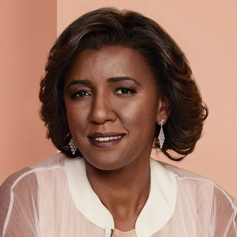

Mulher, negra e gloriosa!

É uma contabilista e empresária brasileira,é ex CEO da Pandora no Brasil. Maia foi criada na Cidade Dutra, Zona Sul de São Paulo, sendo a caçula de sete filhos em uma família de onze pessoas. Seu pai era um engenheiro de voo da Viação Aérea São Paulo (VASP). Ela estudou em escolas públicas e graduou-se em Ciências Contábeis pela Faculdades Metropolitanas Unidas (FMU), tendo também feito especializações na Universidade de Harvard e concluído uma pós-graduação em Finanças pela Universidade de São Paulo (USP).